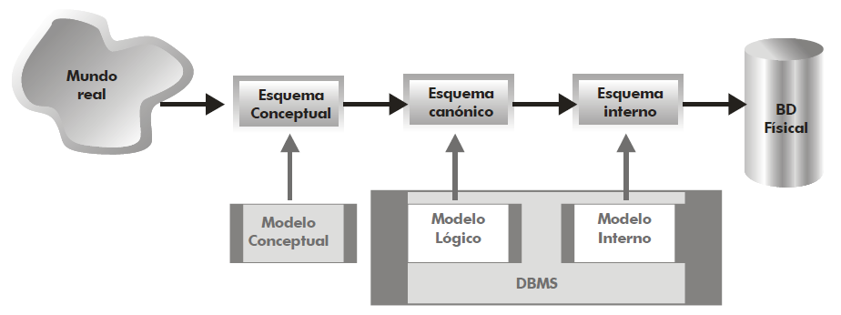

Esta unidad es la segunda, con lo que se imparte en la primera evaluación, con una duración estimada de 10 horas, durante la última semana de septiembre y la primera quincena de octubre:
En la unidad anterior hemos trabajado conceptos generales asociados a las bases de datos y los sistemas gestores de bases de datos. Estudiamos que existen diferentes modelos de datos que dan lugar a diferentes tipos de soluciones.
Pero antes de entrar en uno de los modelos, conviene saber cual es el proceso de diseño de una base de datos. Queda claro que un buen diseño sobre los datos va a facilitar el posterior desarrollo de las aplicaciones que explotan la base de datos.
Las fases que se realizan a la hora de diseñar una base de datos son tres:
Diseño conceptual: a partir de los requisitos y conocido el problema (conocido como el mundo real), mediante un modelo conceptual de alto nivel (EER) crearemos el esquema conceptual.
Diseño lógico: transformación de un modelo conceptual a un modelo de datos concreto para poder representar el problema (relacional, jerárquico, ...). En este paso, ya nos tenemos que haber decidido por un modelo de datos, y en algunos casos, incluso por un SGBD concreto. El resultado del diseño lógico es el esquema lógico/canónico.
Diseño físico: sobre el modelo lógico de datos del punto anterior sobre un SGBD concreto, se define la representación física de las estructuras, obteniendo el esquema físico/interno.
Estas tres fases se resumen en el siguiente gráfico:

Del diseño a los modelos
En las siguientes unidades vamos a ir pasando de una fase del diseño a la siguiente. En nuestro caso, en el modelo conceptual aprenderemos el modelo Entidad Relación, como modelo lógico veremos el Modelo Relacional, y como modelo físico, usaremos el sublenguaje DDL de SQL, ya centrándonos en un SGBD concreto.
Así pues, en esta unidad comenzamos con el diseño conceptual a través del modelo conceptual más extendido, el modelo entidad-relación.
A los largo de las cuatro siguientes unidades vamos a desarrollar una base de datos desde cero. Para ello, en equipos de 3-4 personas, y siguiendo un enfoque metodológico de Aprendizaje Colaborativo basado en Retos cada equipo va a definir:
Un sistema de información.
El modelo entidad relación (diseño conceptual)
El modelo relacional (diseño lógico)
El modelo físico en SQL (diseño físico)
Si no se os ocurre ningún sistema de información, algunas propuestas que podéis diseñar son la base de datos de un gimnasio, una academia de idiomas, una biblioteca, un liga amateur de futbol/baloncesto o la base de datos de un festival de música.
Durante el desarrollo del reto estableceremos diferentes hitos que deberéis cumplir, a modo de entregables. En cada unidad dedicaremos una o más sesiones a trabajar el reto y compartir el resultado con la clase.
En la prueba escrita que realizaremos a finales de la unidad 5 aparecerán algunas actividades sobre alguna de las soluciones creadas.
Entendemos como modelo conceptual el conjunto de conceptos y reglas que nos permiten aplicar una serie de abstracciones con el propósito de definir y manipular datos de la realidad, almacenándola en una base de datos.
Centrándonos en el modelo entidad/relación, cuyo nombre completo es modelo entidad/interrelación (entity/relationship en inglés), es un modelo de datos conceptual de alto nivel, propuesto por Peter Chen en 1976, y vigente a día de hoy por su simplicidad y legibilidad, ya que el resultado del análisis del problema se representa de forma visual mediante diagramas entidad/relación.
Ha tenido numerosas extensiones y aportaciones de muchos otros autores, teniendo soporte por numerosas herramientas de software de diseño (CASE), lo que ha dado lugar a que no exista un único Modelo ER, sino una familia de modelos.
El modelo ER describe el mundo real como un conjunto de entidades y de relaciones entre ellas.
Una entidad es cualquier persona, concepto, suceso o evento (en definitiva, cualquier cosa) con existencia independiente sobre la cual se desea almacenar información.
La entidad representa un tipo de objeto, el concepto que permite representar a un conjunto de objetos similares. Por ejemplo Persona, Cliente, Alumno, Asignatura, etc... serían entidades.
Por otro lado, una entidad define de forma genérica a un conjunto de objetos a través de propiedades (o atributos): cualquier información que interesa guardar sobre las entidades
Se obtienen mediante un proceso de abstracción que se conoce como clasificación. Ejemplos de atributos serían nombre, dirección, fecha de nacimiento, saldo, teléfono, etc...
Finalmente, una relación es una asociación entre entidades.
Un tipo de relación en un modelo de datos permite representar un conjunto de relaciones de características similares.
Igual que las entidades, las relaciones también pueden tener atributos, para representar información que no es propia de ninguno de los objetos participantes en la relación. Ejemplos de relaciones serían Matricular, Contratar, Reservar, etc...
El modelo conceptual también define una serie de propiedades sobre los elementos, como son las propiedades:
estáticas: restricciones sobre las entidades y relaciones. Por ejemplo, la restricción de integridad estática, limita las extensiones (ocurrencias) válidas (permitidas) para una propiedad. Existen varios tipos:
Sobre atributos: valores posibles, valor no nulo.
Sobre entidades: restricción de identificación.
Sobre relaciones: restricciones de cardinalidad.
dinámicas: operaciones sobre los objetos o sus relaciones, relaciones entre operaciones (transacciones) y restricciones dinámicas sobre la evolución de los objetos y sus relaciones, como por ejemplo, "El número de alumnado matriculado en una asignatura debe ser menor o igual a 20".
Operación vs Transacción
Una operación es una acción elemental (indivisible) sobre un objeto o una relación. Las operaciones permiten crear, eliminar, modificar y consultar objetos y relaciones.
Una transacción es una secuencia de operaciones que se considera atómica en lo que se refiere a su ejecución. Es decir, se ejecutan todas sus operaciones o ninguna de ellas, como por ejemplo, al realizar una transferencia bancaria.
Las bases de datos soportan las transacciones gracias a las propiedades ACID (que estudiamos en la sesión anterior)
Una entidad es cualquier objeto (real o abstracto) sobre el que queremos almacenar información en la base de datos.
Se representa mediante un rectángulo con el nombre de la entidad en singular y mayúsculas. Se suele identificar con un sustantivo y suelen estar asociados a objetos (coche, libro, vehículo, etc...), personas (cliente, empleado, proveedor, ...), lugares (ciudad, provincia, etc...), organizaciones (hospital, aula, empresa, ...), etc...
Ejemplo con dos entidades
Control de redundancia
Cada entidad solo puede aparecer una única vez en el modelo.
Entidad fuerte vs débil
Existe dos tipos de entidades:
Regulares o fuertes: existen por sí mismas, sin necesidad de otra entidad. Por ejemplo, los clientes de nuestra empresa. Se representan mediante un rectángulo simple.
Débiles: su existencia depende de otra entidad. Por ejemplo, los familiares de los clientes sería una entidad débil, ya que no tiene sentido almacenarlos si ya no tenemos a los clientes. Se representan mediante un rectángulo doble.
Una entidad débil se identifica por sus propiedades y por las propiedades de las entidades de las que depende. Además, al eliminar la entidad fuerte, también se elimina la entidad débil.
Finalmente, el término ocurrencia indica un elemento de la entidad, un objeto en concreto. Por ejemplo, en la entidad PRODUCTO, una ocurrencia sería Bolígrafo azul de gel cuyo código es BOLIAZUL01 y fecha de alta en el sistema el 1/1/24.
Una relación representa una asociación, relacionando los datos del modelo. Para ello, dibujaremos un rombo que unirá las entidad que participan en la relación, y la nombraremos mediante un verbo en mayúsculas:
Ejemplo de relación
Notación
Existen multiples notaciones para representar las relaciones (las entidades se suelen representar igual en todas las notaciones). En los apuntes vamos a utilizar tanto la notación empleada por la herramienta ERDPlus (también conocida como de pata de gallo), como diferentes notaciones empleadas de forma generalizada por las empresas.
Una vez dominada una notación es muy fácil entender y cambiar a cualquiera de las otras. Eso sí, debes ser constante y modelar siempre con la misma notación.
Se denomina grado de una relación a la cantidad de entidades involucradas en una relación, lo que nos permite clasificarlas las relaciones en:
binarias: son las más comunes, e implica la participación de dos entidades.
ternarias: participan tres entidades. A ser posible, es mejor simplificarlas mediante el uso de varias relaciones binarias. Por ejemplo, la relación existente entre un libro, su autor y la editorial donde se publica el libro.
n-arias: muy excepcionales, ya que involucran 4 o más entidades.
reflexivas (unarias): son relaciones binarias entre la misma entidad. Por ejemplo, una persona se casa con otra persona.
La cardinalidad define la cantidad de ocurrencias de una entidad que se relacionan con una relación (que a su vez se relaciona con otra entidad).
Para ello, definimos las cardinalidades:
mínima: indica el número mínimo de asociaciones en las que aparecerá cada ejemplar de la entidad. Los valores que puede tomar son cero (opcional) o uno (obligatorio)
máxima: indica el número máximo de relaciones en las que puede aparecer cada ejemplar de la entidad. Los valores pueden ser uno o N (muchos).
La cardinalidad entre una entidad y una relación se representa entre paréntesis indicando el valor mínimo a la izquierda (también conocido como participación), y el mayor a la derecha mediante Card(E,R) = (min, max). Las posibles combinaciones son:
(0, 1) - Una ocurrencia de una entidad se puede relacionar con ninguna o una ocurrencia de otra/s entidad/es.
(1, 1) - Una ocurrencia de una entidad se relaciona siempre con una ocurrencia de otra/s entidad/es.
(0, N) - Una ocurrencia de una entidad se puede relacionar con ninguna o muchas ocurrencias de otra/s entidad/es.
(1, N) - Una ocurrencia de una entidad se puede relacionar con una o muchas ocurrencias de otra/s entidad/es.
Si por ejemplo, pensamos en la relación que existe un producto y la categoría la que pertenece, tendremos dos cardinalidades para cada lado de la relación:
Card(PRODUCTO, PERTENECER) = (1, 1) - Un producto siempre pertenece a una categoría
Card(CATEGORIA, PERTENECER) = (0, N) - Una categoría puede no tener productos, pero si tiene, pertenecerán muchos.
Para representar la cardinalidad en el modelo ER, las cardinalidades se anotan en el extremo opuesto de la entidad, utilizándose la regla Entidad, Relación, Cardinalidad, Entidad:
Cardinalidades en la relación
Así pues, si aplicamos la regla de izquierda a derecha tenemos PRODUCTO, PERTENECER, (1,1), CATEGORIA, lo que significa que un producto pertenece siempre a una categoría y como mucho a una también. En cambio, si la aplicamos de derecha a izquierda tenemos CATEGORIA, PERTENECER, (0,N), PRODUCTO lo que indica que a una categoría puede no pertenecer ningún producto pero también muchos.
Así pues, si nos fijamos en las cardinalidades máximas, tenemos tres tipos de relaciones:
1:1 (uno a uno) – Un elemento de la primera relación se corresponde con uno solo de la segunda y viceversa. Por ejemplo, una pantalla digital está en un aula y en un aula sólo hay una pantalla digital.
1:N (uno a muchos) – Un elemento de la primera relación se corresponde con uno o varios de la segunda y uno de la segunda se relaciona con uno solo de la primera. Por ejemplo, un trabajador solo puede trabajar en una empresa y en la empresa puede haber muchos trabajadores
N:M (muchos a muchos) – Un elemento de la primera relación se corresponden con muchos de la segunda y viceversa. Por ejemplo, un alumno puede estar matriculado en varias asignaturas y en una asignatura puede haber muchos alumnos
Para representar las relaciones, además de la notación de Chen (indicando las cardinalidades en el lado opuesto) utilizaremos la notación de pata de gallo:
En las relaciones uno a uno, las dos cardinalidades máximas toman el valor 1, e indican que una ocurrencia de la entidad A se relaciona con sólo uno de la B, y viceversa.
Relación 1:1Ocurrencias 1:1
Si nos fijamos en las ocurrencias de las entidades, vemos como cada departamento tiene asignado siempre un empleado. Por ello, Card(DPTO, DIRIGIR) = (1,1). En cambio, tenemos empleados que no tienen asignado ningún departamento, y en el caso de tenerlo, sólo tienen uno, lo que implica que Card(EMPLEADO, DIRIGIR) = (0,1).
Como las dos cardinalidades máximas son 1, decimos que la relación es uno a uno.
En las relaciones uno a muchos, en un sentido hay una cardinalidad máxima de uno, y en la otra de muchos, es decir, una ocurrencia de la entidad A se relaciona con una de la entidad B, pero una ocurrencia de la entidad B lo hace con muchas de la entidad A.
En el siguiente ejemplo, tenemos que cada producto tendrá una categoría y en cambio, que de una categoría, tendremos muchos productos.
Ocurrencias 1:NRelación 1:N
Si nos fijamos en las ocurrencias de las entidades, vemos como un producto pertenece a una categoría, y siempre a una. Por ello, Card(PRODUCTO, PERTENECER) = (1,1). En cambio, tenemos categorías a las que pertenecen muchos productos, e incluso categorías sin productos, lo que implica que Card(CATEGORIA, PERTENECER) = (0,N).
Supuesto Empresa
Queremos gestionar la información sobre los empleados de una empresa, a partir de las siguientes condiciones: para cada empleado dispondremos de su DNI, nombre, fecha de nacimiento, salario y departamento en el que trabaja.
De cada departamento sabremos su nombre, el número del despacho en el que se ubica y conoceremos quien es el jefe de dicho departamento.
Solución
Solución supuesto Empresa
Primero localizamos las entidades y sus atributos:
Entidades: EMPLEADO, DEPARTAMENTO
Atributos de EMPLEADO: dni (atributo identificador), nombre, fecha de nacimiento, salario
Atributos de DEPARTAMENTO: nombre, número de despacho
Respecto a la nomenclatura, hemos recortado la palabra DPTO para reducir el tamaño del diagrama. Además, recuerda que las entidades y las relaciones se nombran en mayúsculas y los atributos en minúsculas. También es recomendable nombrar todos los elementos sin espacios en blanco, para facilitar su posterior transformación al modelo relacional.
Destacar que ni el departamento del empleado ni el jefe son atributos de las entidades, sino que se traducen en relaciones:
Relación 1:N nombrada como TRABAJAR entre DEPARTAMENTO Y EMPLEADO, de manera que en un departamento trabajan muchos empleados, pero un empleado sólo trabaja en un departamento.
Relación 1:1 nombrada como SER_JEFE entre DEPARTAMENTO y EMPLEADO. Un empleado es jefe de un departamento, y en un departamento, un empleado es el jefe.
En las relaciones muchos a muchos, en los dos sentidos hay una cardinalidad máxima de muchos, es decir, una ocurrencia de la entidad A se relaciona con muchas de la entidad B, y una ocurrencia de la entidad B lo hace con muchas de la entidad A.
En el siguiente ejemplo, tenemos que cada empleado puede trabajar en muchos proyectos, y que en cada proyecto, pueden trabajar muchos empleados:
Ocurrencias N:MRelación N:M
Si nos fijamos en las ocurrencias de las entidades, vemos como un empleado trabaja en uno o más proyectos (o en ninguno). Por ello, Card(EMPLEADO, TRABAJAR) = (0,N). En cambio, tenemos proyectos en los que trabajan varios empleados, o incluso proyectos sin empleados, lo que implica que Card(PROYECTO, TRABAJAR) = (0,N).
Nomenclatura
En todos los casos, es recomendable no utilizar espacios en blanco ni tildes, para facilitar la futura transformación al modelo físico.
Las entidades suelen ser sustantivos y se nombran en singular y mayúsculas.
Los atributos también en singular, pero en minúsculas.
Las relaciones son verbos en mayúsculas.
Respecto a la notación, por ejemplo, en la Universidad de Alicante emplean rombos coloreados para expresar las cardinalidades máximas:
Los atributos describen propiedades de las entidades y de las relaciones. Es importante destacar que en una misma entidad, el nombre de los atributos no se puede repetir, pero sí en entidades diferentes.
Atributos
FIXME: explicar ... VNN no aparece en el diagrama
Tipos:
Identificador: identifican las ocurrencias de la entidad
Compuesto de atributos simples
No nulo: restricción de valor no nulo
Multivaluado: puede tomar varios valores
Derivado: Su valor se deduce a partir de otros atributos de la misma entidad u otras entidades.
En una relación: Su valor depende de la relación, no de ninguna entidad
Supuesto Carreteras
Se desea diseñar una base de datos que contenga la información relativa a todas las carreteras de España. Se pide realizar el diseño del modelo ER sabiendo que:
Las carreteras se encuentran divididas en tramos.
Un tramo, del que nos interesa su longitud, siempre pertenece a una única carretera y no puede cambiar de carretera.
Un tramo puede pasar por varios términos municipales, siendo un dato de interés el km del tramo por el que entra en dicho término municipal y el km por el que sale.
Existen una serie de áreas en las que se agrupan los tramos, cada uno de los
cuales no puede pertenecer a más de un área.
Solución
Solución supuesto Carreteras
Primero localizamos las entidades y sus atributos:
Entidades: CARRETERA, TRAMO, MUNICIPIO, AREA
Atributos: cada entidad tendrá un atributo identificador, y cómo en el enunciado no se indica, en unos casos creamos un atributo codigo y en otros con el nombre es suficiente (como es el caso de MUNICIPIO). Como atributo propio, cada TRAMO tiene un atributo longitud.
Las relaciones son:
Relación 1:N nombrada como PERTENECER entre CARRETERA Y TRAMO, ya que "las carreteras se encuentran divididas en tramos" y "un tramo, del que nos interesa su longitud, siempre pertenece a una única carretera y no puede cambiar de carretera".
Relación N:M nombrada como PASAR entre TRAMO y MUNICIPIO, ya que "un tramo puede pasar por varios términos municipales", y aunque no lo indica de forma explicita, deducimos que por un municipio pueden pasar varios tramos. Además, añadimos dos atributos en la relación para almacenar "el km del tramo por el que entra en dicho término municipal y el km por el que sale"". Si hubiéramos colocado los atributos en TRAMO o en MUNICIPIO no tendrían el mismo significado, ya que nos interesa el dato de la relación entre las dos entidades y no de una de ellas por separado.
Relación 1:N nombrada como AGRUPAR entre TRAMO Y AREA, ya que "existen una serie de áreas en las que se agrupan los tramos, cada uno de los cuales no puede pertenecer a más de un área.".
En el apartado de Entidades vimos que tenemos entidades fuertes y debiles, y que depedían de....
Las entidades débiles presentan dos tipos de dependencia:
Dependencia en existencia: entre entidades, si desaparece una instancia de entidad fuerte desaparecerán las instancias de entidad débiles que dependan de la primera. La representación de este tipo de dependencia incluirá una E en el interior de la relación débil.
Dependencia en identificación: debe darse una dependencia en existencia y además, una ocurrencia de la entidad débil no puede identificarse por sí misma, debiendo hacerse mediante la clave de la entidad fuerte asociada. La representación de este tipo de dependencia incluirá una ID en el interior de la relación débil.
AC201. (RABD.6 // CE6b, CE6c // 3p) A partir del siguiente sistema de información, identifica las entidades, atributos y relaciones:
Una empresa vende productos a varios clientes.
Se necesita conocer los datos personales de los clientes (nombre, apellidos, dni, dirección y fecha de nacimiento).
Cada producto tiene un nombre y un código, así como un precio unitario. Un cliente puede comprar varios productos a la empresa, y un mismo producto puede ser comprado por varios clientes.
Los productos son suministrados por diferentes proveedores. Se debe tener en cuenta que un producto sólo puede ser suministrado por un proveedor, y que un proveedor puede suministrar diferentes productos. De cada proveedor se desea conocer el NIF, nombre y dirección
AC202. (RABD.6 // CE6d // 3p) A partir del ejercicio anterior, realiza el modelo ER unicamente con las entidades y las relaciones (sin colocar los atributos) y define las cardinalidades de las relaciones. Para ello, dibuja en un folio el modelo y escanea o adjunta una foto del resultado y súbelo a Aules.
AC203. (RABD.6 // CE6b // 3p) A partir del siguiente modelo ER, indica las cardinalidades de las relaciones, y a continuación, redacta el texto que daría lugar como resultado este modelo:
Actividad 203
AC204. (RABD.6 // CE6b // 3p) Realiza el modelo ER del siguiente sistema de información:
Una empresa ubicada en distintos edificios de distintos polígonos industriales desea registrar la distribución de sus departamentos.
Un departamento puede estar distribuido en varios edificios. Del departamento tenemos su nombre y el número de empleados que lo integran.
De los edificios sabemos su nombre y el número de despachos que tienen. En cada edificio (que está localizado en un polígono industrial, y del que se conoce su nombre y la ciudad en la que está situado) pueden ubicarse distintos departamentos.
Debido a esto, se desea controlar el número de despachos que cada departamento tiene en cada edificio.
AC205. (RABD.6 // CE6b // 3p) Realiza el modelo ER del siguiente sistema de información:
Una pequeña empresa telefónica desea crear una Base de Datos para el control de las llamadas efectuadas exclusivamente entre sus abonados.
Dispondrá de información sobre las terminales de su red (si se trata de teléfonos móviles o fijos, el no de teléfono y el nombre del abonado), y de cada llamada realizada entre ellos se almacenará: números de teléfono del emisor y el receptor de la llamada, la hora de comienzo de la misma y su duración.
AR206. (RABD.6 // CE6b // 3p) Realiza el modelo ER de una parte de la base de datos que almacenará información sobre los ríos de España.
En esta base de datos vamos a almacenar el nombre y el número de habitantes de todas las comunidades autónomas, el nombre y el número de habitantes de algunas ciudades, así como la autonomía a la que pertenecen.
Se desea conocer el nombre, longitud y caudal de algunos ríos, registrando las ciudades (de entre las que tenemos almacenadas) por las que pasan, así como las comunidades que bañan. Además, se guardará el número de kilómetros que de cada río discurren por cada comunidad autónoma.
AP207. (RABD.6 // CE6b // 3p) Realiza el modelo ER del siguiente sistema de información:
Una agencia de viajes pretende informatizar su gestión, que hasta ahora se venía haciendo de forma manual. De cada viaje se tiene la siguiente información: código del viaje, nombre del viaje y países visitados
Cada viaje se desarrolla en una serie de jornadas (días). De cada jornada se desea mantener la siguiente información: número de la jornada en el viaje, descripción, localidad de partida, localidad de destino y localidades intermedias que se visitan (se puede visitar 0,1 o más localidades intermedias), principal medio de transporte utilizado (0 ó 1), kilómetros recorridos y hotel de pernocta (puede ocurrir que una jornada no incluya ningún hotel de pernocta, por ejemplo, una jornada de vuelo).
En un viaje se visitan uno o más países. De cada país se cuenta con la siguiente información: nombre, pasaporte (si/no), localidad capital y descripción.
De cada localidad se desea conocer su nombre, país y descripción. Es posible que en una jornada se visiten localidades situadas en países distintos a los indicados como visitados en el viaje.
De cada medio de transporte se desea mantener su código y descripción.
De cada hotel se desea conocer la siguiente información: código de hotel, nombre del hotel, categoría 1 a 6 estrellas, número de fax, número de teléfono, localidad en que se halla situado, país, descripción y hotel de reserva que lo sustituye en caso de que no haya plazas. En una localidad puede haber situados más de un hotel, pero sólo uno será titular para una jornada determinada.
AC208. (RABD.6 // CE6b // 3p) Completa el siguiente modelo ER a partir del siguiente sistema de información sobre una prueba ciclista, teniendo en cuenta que no están modeladas todas las entidades, relaciones y/o atributos:
A los ciclistas inscritos en la prueba se les asigna un dorsal único. De cada ciclista participante se desea conocer su edad, nombre y equipo al que pertenece. De cada equipo se desea conocer su director.
La prueba es por etapas. De cada etapa se registra el número de etapa, los kilómetros, la ciudad de salida y la de llegada (con unas breves reseñas geográficas, históricas y económicas) y los puertos por los que pasa la etapa (nombre, altura, categoría).
Se quiere conocer qué ciclista ha ganado en cada puerto y quién ha ganado cada etapa.